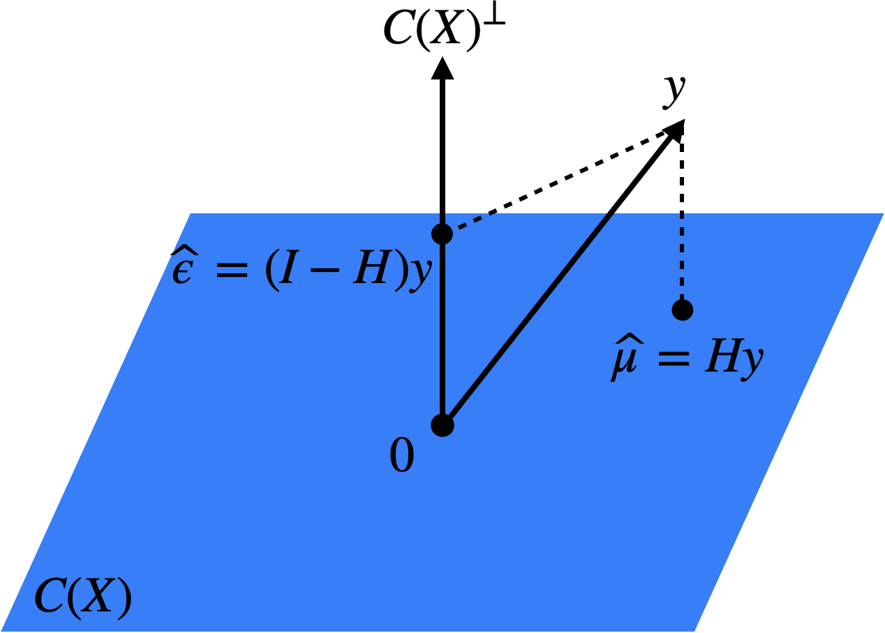
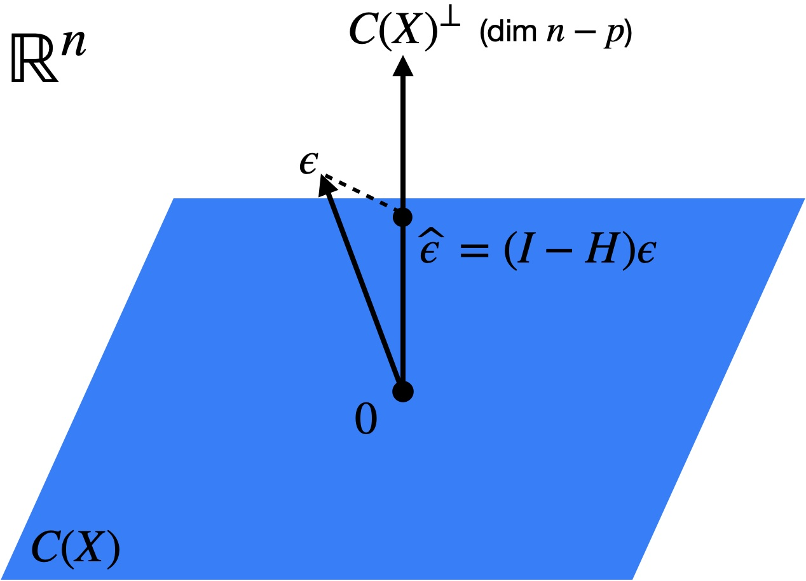

7 Building blocks
See also Agresti 3.1.1, 3.1.2, 3.1.4
First we put in place some building blocks: The multivariate normal distribution (Section 7.1), the distributions of linear regression estimates and residuals (Section 7.2), and estimation of the noise variance \(\sigma^2\) (Section 7.3).
7.1 The multivariate normal distribution
Recall that a random vector \(\boldsymbol{w} \in \mathbb{R}^d\) has a multivariate normal distribution with mean \(\boldsymbol{\mu}\) and covariance matrix \(\boldsymbol{\Sigma}\) if it has probability density
\[ p(\boldsymbol{w}) = \frac{1}{\sqrt{(2\pi)^{d}\text{det}(\boldsymbol{\Sigma})}}\exp\left(-\frac{1}{2}(\boldsymbol{w} - \boldsymbol{\mu})^\top \boldsymbol{\Sigma}^{-1}(\boldsymbol{w} - \boldsymbol{\mu})\right). \]
These random vectors have lots of special properties, including:
- Linear transformation: If \(\boldsymbol{w} \sim N(\boldsymbol{\mu}, \boldsymbol{\Sigma})\), then \(\boldsymbol{A} \boldsymbol{w} + \boldsymbol{b} \sim N(\boldsymbol{A} \boldsymbol{\mu} + \boldsymbol{b}, \boldsymbol{A} \boldsymbol{\Sigma} \boldsymbol{A}^\top)\).
- Independence: If \[ \begin{pmatrix}\boldsymbol{w}_1 \\ \boldsymbol{w}_2 \end{pmatrix} \sim N\left(\begin{pmatrix}\boldsymbol{\mu}_1 \\ \boldsymbol{\mu}_2 \end{pmatrix} , \begin{pmatrix}\boldsymbol{\Sigma}_{11} & \boldsymbol{\Sigma}_{12} \\ \boldsymbol{\Sigma}_{12}^\top & \boldsymbol{\Sigma}_{22}\end{pmatrix}\right), \] then \(\boldsymbol{w}_1 \perp\!\!\!\perp \boldsymbol{w}_2\) if and only if \(\boldsymbol{\Sigma}_{12} = \boldsymbol{0}\).
An important distribution related to the multivariate normal is the \(\chi^2_d\) (chi-squared with \(d\) degrees of freedom) distribution, defined as
\[ \chi^2_d \equiv \sum_{j = 1}^d w_j^2 \quad \text{for} \quad w_1, \dots, w_d \overset{\text{i.i.d.}}{\sim} N(0, 1). \]
7.2 The distributions of linear regression estimates and residuals
See also Dunn and Smyth 2.8.2
The most important distributional result in linear regression is that
\[ \boldsymbol{\widehat{\beta}} \sim N(\boldsymbol{\beta}, \sigma^2 (\boldsymbol{X}^\top \boldsymbol{X})^{-1}). \tag{7.1}\]
Indeed, by the linear transformation property of the multivariate normal distribution,
\[ \begin{split} \boldsymbol{y} \sim N(\boldsymbol{X} \boldsymbol{\beta}, \sigma^2 \boldsymbol{I}_n) &\Longrightarrow \boldsymbol{\widehat{\beta}} = (\boldsymbol{X}^\top \boldsymbol{X})^{-1}\boldsymbol{X}^\top \boldsymbol{y} \sim N((\boldsymbol{X}^\top \boldsymbol{X})^{-1}\boldsymbol{X}^\top \boldsymbol{X} \boldsymbol{\beta}, (\boldsymbol{X}^\top \boldsymbol{X})^{-1}\boldsymbol{X}^\top \sigma^2 \boldsymbol{I}_n \boldsymbol{X}(\boldsymbol{X}^\top \boldsymbol{X})^{-1}) \\ &= N(\boldsymbol{\beta}, \sigma^2 (\boldsymbol{X}^\top \boldsymbol{X})^{-1}). \end{split} \]
Next, let’s consider the joint distribution of \(\boldsymbol{\widehat{\mu}} = \boldsymbol{X} \boldsymbol{\widehat{\beta}}\) and \(\boldsymbol{\widehat{\epsilon}} = \boldsymbol{y} - \boldsymbol{X} \boldsymbol{\widehat{\beta}}\). We have
\[ \begin{split} \begin{pmatrix} \boldsymbol{\widehat{\mu}} \\ \boldsymbol{\widehat{\epsilon}} \end{pmatrix} = \begin{pmatrix} \boldsymbol{H} \boldsymbol{y} \\ (\boldsymbol{I} - \boldsymbol{H}) \boldsymbol{y} \end{pmatrix} = \begin{pmatrix} \boldsymbol{H} \\ \boldsymbol{I} - \boldsymbol{H} \end{pmatrix}\boldsymbol{y} &\sim N\left(\begin{pmatrix} \boldsymbol{H} \\ \boldsymbol{I} - \boldsymbol{H} \end{pmatrix}\boldsymbol{X} \boldsymbol{\beta}, \begin{pmatrix} \boldsymbol{H} \\ \boldsymbol{I} - \boldsymbol{H} \end{pmatrix}\cdot \sigma^2 \boldsymbol{I} \begin{pmatrix} \boldsymbol{H} & \boldsymbol{I} - \boldsymbol{H} \end{pmatrix}\right) \\ &= N\left(\begin{pmatrix} \boldsymbol{X} \boldsymbol{\beta} \\ \boldsymbol{0} \end{pmatrix}, \begin{pmatrix} \sigma^2 \boldsymbol{H} & \boldsymbol{0} \\ \boldsymbol{0} & \sigma^2(\boldsymbol{I} - \boldsymbol{H}) \end{pmatrix} \right). \end{split} \]
In other words,
\[ \boldsymbol{\widehat{\mu}} \sim N(\boldsymbol{X} \boldsymbol{\beta}, \sigma^2 \boldsymbol{H}) \quad \text{and} \quad \boldsymbol{\widehat{\epsilon}} \sim N(\boldsymbol{0}, \sigma^2(\boldsymbol{I} - \boldsymbol{H})), \quad \text{with} \quad \boldsymbol{\widehat{\mu}} \perp\!\!\!\perp \boldsymbol{\widehat{\epsilon}}. \tag{7.2}\]
The statistical independence between \(\boldsymbol{\widehat{\mu}}\) and \(\boldsymbol{\widehat{\epsilon}}\) is a result of the fact that these two quantities are projections of \(\boldsymbol{y}\) onto two orthogonal subspaces: \(C(\boldsymbol{X})\) and \(C(\boldsymbol{X})^\perp\) (Figure 7.1).

Since \(\boldsymbol{\widehat{\beta}}\) is a deterministic function of \(\boldsymbol{\widehat{\mu}}\) (in particular, \(\boldsymbol{\widehat{\beta}} = (\boldsymbol{X}^\top \boldsymbol{X})^{-1}\boldsymbol{X}^\top \boldsymbol{\widehat{\mu}}\)), it also follows that
\[ \boldsymbol{\widehat{\beta}} \perp\!\!\!\perp \boldsymbol{\widehat{\epsilon}}. \tag{7.3}\]
7.3 Estimation of the noise variance \(\sigma^2\)
See also Dunn and Smyth 2.4.2, 2.5.3
We can’t quite do inference for \(\boldsymbol{\beta}\) based on the distributional result (7.1) because the noise variance \(\sigma^2\) is unknown to us. Intuitively, since \(\sigma^2 = \mathbb{E}[\epsilon_i^2]\), we can get an estimate of \(\sigma^2\) by looking at the quantity \(\|\boldsymbol{\widehat{\epsilon}}\|^2\). To get the distribution of this quantity, we need the following lemma:
Lemma 7.1 Let \(\boldsymbol{w} \sim N(\boldsymbol{0}, \boldsymbol{P})\) for some projection matrix \(\boldsymbol{P}\). Then, \(\|\boldsymbol{w}\|^2 \sim \chi^2_d\), where \(d = \text{trace}(\boldsymbol{P})\) is the dimension of the subspace onto which \(\boldsymbol{P}\) projects.
Proof. Let \(\boldsymbol{P} = \boldsymbol{U} \boldsymbol{D} \boldsymbol{U}^\top\) be an eigenvalue decomposition of \(\boldsymbol{P}\), where \(\boldsymbol{U}\) is orthogonal and \(\boldsymbol{D}\) is a diagonal matrix with \(D_{ii} \in \{0,1\}\). We have \(\boldsymbol{w} \overset{d}{=} \boldsymbol{U} \boldsymbol{D} \boldsymbol{z}\) for \(\boldsymbol{z} \sim N(0, \boldsymbol{I}_n)\). Therefore,
\[ \|\boldsymbol{w}\|^2 = \|\boldsymbol{D} \boldsymbol{z}\|^2 = \sum_{i: D_{ii} = 1} z_i^2 \sim \chi^2_d, \quad \text{where } d = |\{i: D_{ii} = 1\}| = \text{trace}(D) = \text{trace}(\boldsymbol{P}). \]
Recall that \(\boldsymbol{I} - \boldsymbol{H}\) is a projection onto the \((n-p)\)-dimensional space \(C(\boldsymbol{X})^\perp\), so by Lemma 7.1 and equation (7.2) we have
\[ \|\boldsymbol{\widehat{\epsilon}}\|^2 \sim \sigma^2 \chi^2_{n-p}. \tag{7.4}\]
From this result, it follows that \(\mathbb{E}[\|\boldsymbol{\widehat{\epsilon}}\|^2] = n-p\), so
\[ \widehat{\sigma}^2 \equiv \frac{1}{n-p}\|\boldsymbol{\widehat{\epsilon}}\|^2 \tag{7.5}\]
is an unbiased estimate for \(\sigma^2\). Why does the denominator need to be \(n-p\) rather than \(n\) for the estimator above to be unbiased? The reason for this is that the residuals \(\boldsymbol{\widehat{\epsilon}}\) are the projection of the true noise vector \(\boldsymbol{\epsilon} \in \mathbb{R}^n\) onto the \((n-p)\)-dimensional subspace \(C(\boldsymbol{X})^\perp\) (Figure 7.2). To see this, note that
\[ \boldsymbol{\widehat{\epsilon}} = (\boldsymbol{I} - \boldsymbol{H})\boldsymbol{y} = (\boldsymbol{I} - \boldsymbol{H})(\boldsymbol{X} \boldsymbol{\beta} + \boldsymbol{\epsilon}) = (\boldsymbol{I} - \boldsymbol{H})\boldsymbol{\epsilon}. \]
Therefore, the norm of the residual vector will be smaller than that of the noise vector, especially to the extent that \(p\) is close to \(n\).
